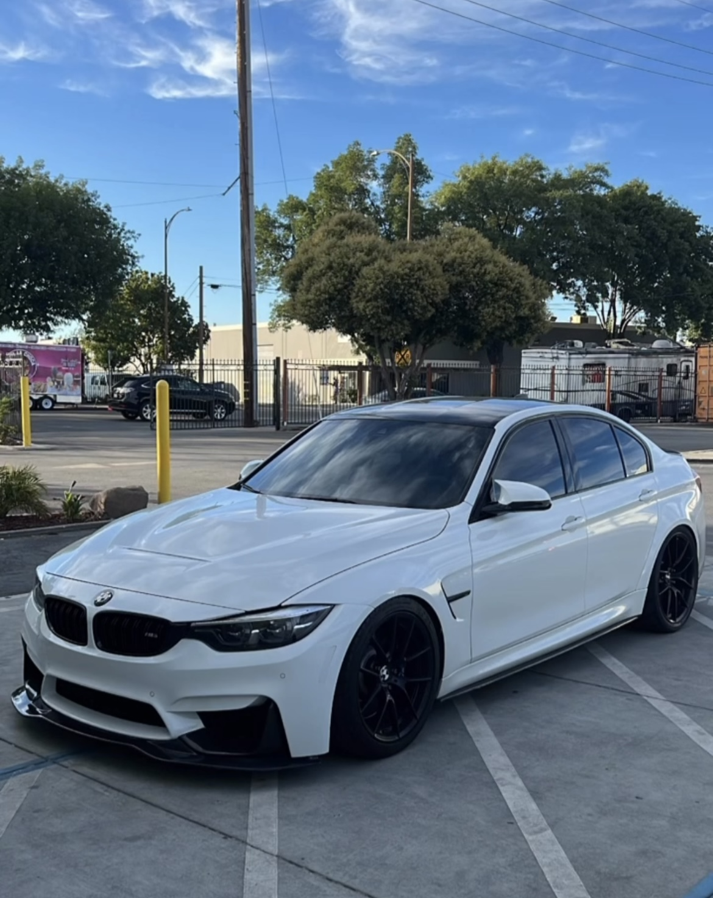

One of the highlights I'm thrilled to share with you is the completion of my latest project car this summer. I had the incredible opportunity to collaborate with my uncle—who owns a car dealership—on restoring and customizing a 2019 BMW M3.
But this isn't just any M3 - it's a unique expression of my automotive passion. From fine-tuning the engine for maximum horsepower, installing a sports suspension for superior handling, to adding sleek performance wheels, every detail was meticulously planned. And with a cool air intake, the engine's performance is at its peak. My uncle's mentorship and expertise were invaluable in making this project a resounding success. I'm super excited to showcase it!

For more insights into BMW M3 customization, visit the BMW M3 Overview.
| Feature | Details |
|---|---|
| Year | 2019 |
| Model | BMW M3 CS |
| Special Modifications | Engine tuning, sports suspension, performance wheels, cool air intake |